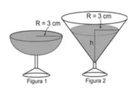

(Enem) Em um casamento, os donos da festa serviam champanhe aos seus convidados em taças com formato de um hemisfério (Figura 1), porém um acidente na cozinha culminou na quebra de grande
parte desses recipientes. Para substituir as taças quebradas, utilizou-se um outro tipo com formato de cone (Figura 2).
No entanto, os noivos solicitaram que o volume de champanhe nos dois tipos de taças fosse igual.

Considere:
$$ V_{esfera}=\frac{4}{3}\pi r^3 $$ $$ V_{cone} =\frac{1}{3}\pi r^2 h $$
Sabendo que a taça com o formato de hemisfério é servida completamente cheia, a altura do volume de champanhe que deve ser colocado na outra taça, em centímetros, é de?
Problema do beijo, Quantas circunferencia pode ser colocada tangenciando uoutras duas em volta da central? Prove isso com argumentos matemáticos?